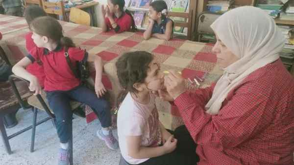

ورش فنيه لقصور الثقافة لعمل يوم ترفيهي لمرض السرطان من خلال طلاب المدارس
ضمن فعاليات الهيئة العامة لقصور الثقافة برئاسة المخرج هشام عطوة، المقدمة للأطفال، نظم قصر ثقافة 25 يناير للطفل، عددا من الفعاليات على مدار اليومين الماضيين، بمستشفيات الأطفال بمدرستي زين العابدين الابتدائية وحسن باشا طاهر.
وقدم القصر عددا من الورش الفنية والثقافية ضمن يوم ترفيهي للأطفال مرضى السرطان لإسعادهم والترفيه عنهم تضمنت فقراته ورشة لعمل تيجان بورق الفوم نفذتها مريم حسن، وورشة لعمل مجسم للمهرج بورق الفوم نفذتها فاطمة شعبان، بجانب ورشة لعمل أقنعة بورق الفوم نفذتها وفاء أبو الفضل، كما تم توزيع مجموعة من الهديا الرمزية للأطفال، وجاءت الفعاليات استمرارا لاحتفالات قصور الثقافة بيوم اليتيم.
احتفالات قصور الثقافة بيوم اليتيم
وأقيم يوم ثقافي بمدرسة زين العابدين الابتدائية تضمن ورشة لعمل أقنعة بورق الفوم، ومسابقة ثقافية بعنوان "شخصيات إسلامية" نفذتها ريهام نبيل، عن أشهر الشخصيات التي لها دور رائد في نشر الدعوة الإسلامية مثل أبو بكر الصديق، وعمر بن الخطاب، وعلي بن أبي طالب وغيرهم.
وفي مدرسة حسن طاهر باشا أقيمت مسابقة بعنوان «الأوائل» قدمتها فاطمة شعبان، بسؤال الأطفال عن أول من أنجز عملا في أكثر من مجال، مثل أول من استخدم القلم للكتابة، وأول من صعد القمر وغيرها، إلى جانب ورشة طباعة استنسل للفراشة نفذتها ناريمان نبيل.